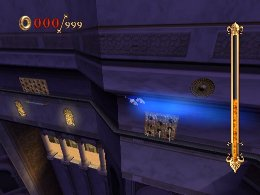
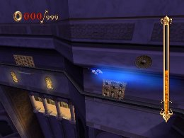
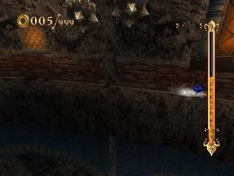
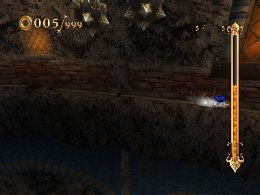

Wall Shuffle Techniques
Advanced Tactics
In areas where Sonic must move along narrow ledges with his back to the wall, you can wall shuffle by tilting the Wii Remote to the left or right. Perhaps you’ve noticed that even if you equip a Speed Up-type skill, Sonic doesn’t shuffle much faster.
Actually, Sonic’s wall shuffling speed is affected by Quick Step-type skills, and if you equip Quick Mega Step, you should experience a real boost in speed. The extra speed will make controlling Sonic that much more difficult, so be careful.
Here are some tips regarding wall shuffling:
Before you begin shuffling along the wall, jump in using Short Jump or Charge Jump, and before Sonic lands, do a Jump Dash to proceed without wall shuffling. This is risky in areas with spikes or iron balls, but it’s an effective option in areas with few obstacles.
 

Alternatively, you can equip the Aegis Slider skill and a Skimmer-type skill and slide at top speed before Sonic starts shuffling along the wall. This allows you to slide through the entire wall area, with relatively low risk of taking damage. If wall shuffling isn’t your thing, it may be worth giving this tactic a try.
 

Super Play
EVIL FOUNDRY
Go for the Goal "Head for the Center!"
Use "Aegis Slider" and "Hyper Skimmer" to breakthrough the wall scene located at the first phase of the stage.
« Boss Strategies(NOTE! We have completed up to the later bosses!!) | Advanced Tactics | Explaining Selected Skills »
 RSS
RSS